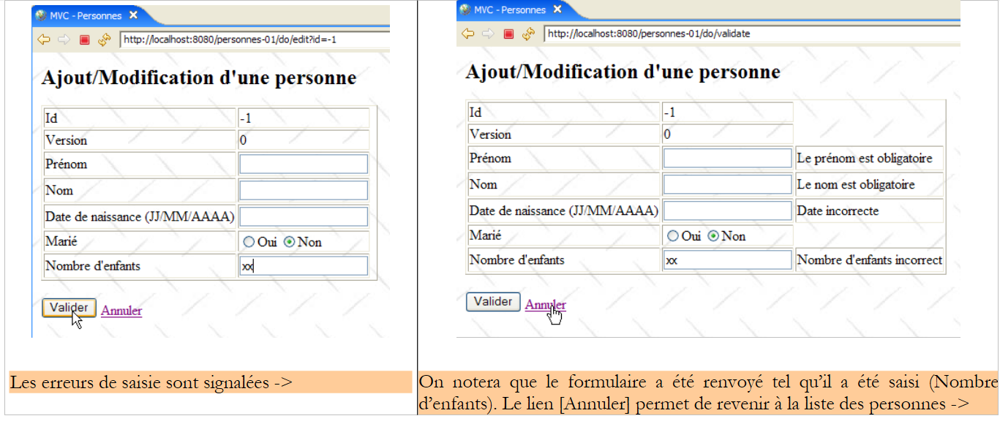
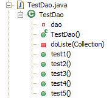
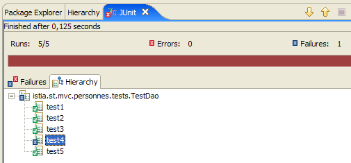
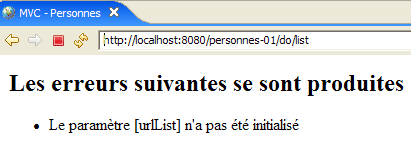
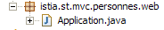
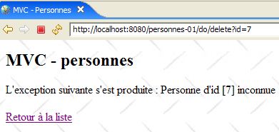

14. Webapplicatie MVC in een 3-tier-architectuur – Voorbeeld 1
14.1. Présentation
Tot nu toe hebben we ons beperkt tot voorbeelden met een educatief doel. Daarom moesten ze eenvoudig zijn. We presenteren nu een eenvoudige applicatie die niettemin uitgebreider is dan alle tot nu toe gepresenteerde voorbeelden. Het bijzondere aan deze applicatie is dat ze gebruikmaakt van de drie lagen van een 3-tier-architectuur:

De lezer wordt uitgenodigd om de principes van een webtoepassing MVC in een 3-tier-architectuur nog eens door te nemen in paragraaf 4, mocht hij deze zijn vergeten.
Met de webapplicatie die we gaan schrijven, kunnen we een groep personen beheren met vier bewerkingen:
- lijst van personen in de groep
- een persoon aan de groep toevoegen
- een persoon in de groep wijzigen
- een persoon uit de groep verwijderen
Deze vier basisbewerkingen komen overeen met de vier bewerkingen op een databasetabel. We gaan twee versies van deze applicatie schrijven:
- in versie 1 zal de laag [dao] geen gebruik maken van een database. De personen in de groep worden opgeslagen in een eenvoudig object [ArrayList] dat intern wordt beheerd door de laag [dao]. Hierdoor kan de lezer de applicatie testen zonder beperkingen van een database.
- In versie 2 zullen we de groep personen in een databasetabel plaatsen. We zullen laten zien dat dit geen invloed heeft op de weblaag van versie 1, die ongewijzigd blijft.
De volgende schermafbeeldingen tonen de pagina’s die de applicatie met de gebruiker uitwisselt.


 |
 |
14.2. Het Eclipse-project
Het applicatieproject heet [personnes-01]:

Dit project omvat de drie lagen van de 3-tier-architectuur van de applicatie:
 |
- de laag [dao] is opgenomen in het pakket [istia.st.mvc.personnes.dao]
- de laag [metier] of [service] is opgenomen in het pakket [istia.st.mvc.personnes.service]
- de laag [web] of [ui] is opgenomen in het pakket [istia.st.mvc.personnes.web]
- het pakket [istia.st.mvc.personnes.entites] bevat de objecten die door verschillende lagen worden gedeeld
- het pakket [istia.st.mvc.personnes.tests] bevat de JUnit-tests van de lagen [dao] en [service]
We gaan achtereenvolgens de drie lagen [dao], [service] en [web] bekijken. Omdat het te lang zou duren om alles uit te schrijven en misschien te saai zou zijn om te lezen, zullen we de uitleg soms wat beknopt houden, behalve wanneer er iets nieuws wordt gepresenteerd.
14.3. De weergave van een persoon
De applicatie beheert een groep personen. De schermafbeeldingen in paragraaf 14.1 toonden enkele kenmerken van een persoon. Formeel worden deze weergegeven door een klasse [Personne]:

De klasse [Personne] is als volgt:
- Een persoon wordt geïdentificeerd aan de hand van de volgende gegevens:
- id: een nummer dat een persoon uniek identificeert
- achternaam: de achternaam van de persoon
- voornaam: de voornaam van de persoon
- dateNaissance: zijn of haar geboortedatum
- burgerlijke staat: of de persoon al dan niet getrouwd is
- nbEnfants: het aantal kinderen
- het attribuut [version] is een attribuut dat kunstmatig is toegevoegd voor de toepassing. Vanuit objectgeoriënteerd oogpunt zou het ongetwijfeld beter zijn geweest om dit attribuut toe te voegen aan een klasse die is afgeleid van [Personne]. De noodzaak ervan wordt duidelijk bij het beschrijven van gebruiksscenario’s voor de webapplicatie. Een daarvan is het volgende:
Op tijdstip T1 opent een gebruiker U1 het bewerkingsscherm van een persoon P. Op dat moment is het aantal kinderen 0. Hij wijzigt dit aantal in 1, maar voordat hij zijn wijziging bevestigt, opent gebruiker U2 de bewerkingspagina voor dezelfde persoon P. Aangezien U1 zijn wijziging nog niet heeft bevestigd, ziet U2 het aantal kinderen als 0. U2 zet de naam van persoon P in hoofdletters. Vervolgens bevestigen U1 en U2 hun wijzigingen in die volgorde. De wijziging van U2 zal prevaleren: de naam wordt in hoofdletters weergegeven en het aantal kinderen blijft op nul staan, terwijl U1 denkt dat hij dit in 1 heeft gewijzigd.
Het begrip ‘persoonsversie’ helpt ons dit probleem op te lossen. We nemen hetzelfde gebruiksscenario:
Op tijdstip T1 begint gebruiker U1 met het bewerken van persoon P. Op dat moment is het aantal kinderen 0 en is de versie V1. Hij wijzigt het aantal kinderen in 1, maar voordat hij zijn wijziging bevestigt, begint een gebruiker met ID U2 met het bewerken van dezelfde persoon P. Aangezien U1 zijn wijziging nog niet heeft bevestigd, ziet U2 dat het aantal kinderen op 0 staat en de versie op V1. U2 zet de naam van persoon P in hoofdletters. Vervolgens bevestigen U1 en U2 hun wijzigingen in deze volgorde. Voordat een wijziging wordt bevestigd, wordt gecontroleerd of degene die persoon P wijzigt, dezelfde versie heeft als de momenteel geregistreerde persoon P. Dit is het geval voor gebruiker U1. Zijn wijziging wordt dus geaccepteerd en vervolgens wordt de versie van de gewijzigde persoon veranderd van V1 naar V2 om aan te geven dat de persoon een wijziging heeft ondergaan. Bij het valideren van de wijziging van U2 zal blijken dat hij een versie V1 van persoon P heeft, terwijl de huidige versie daarvan V2 is. We kunnen de gebruiker U2 dan laten weten dat iemand hem voor was en dat hij moet uitgaan van de nieuwe versie van persoon P. Hij zal dit doen, persoon P met versie V2 ophalen – die nu een kind heeft –, de naam in hoofdletters zetten en de wijziging valideren. Zijn wijziging wordt geaccepteerd als de geregistreerde persoon P nog steeds versie V2 heeft. Uiteindelijk worden de wijzigingen die zijn aangebracht door U1 en U2 meegenomen, terwijl in het gebruiksscenario zonder versies één van de wijzigingen verloren zou zijn gegaan.
- regels 32-40: een constructor die de velden van een persoon kan initialiseren. Het veld [version] wordt weggelaten.
- regels 43-51: een constructor die een kopie maakt van de persoon die als parameter wordt doorgegeven. We hebben dan twee objecten met identieke inhoud, maar waarnaar door twee verschillende pointers wordt verwezen.
- regel 55: de methode [toString] wordt opnieuw gedefinieerd om een tekenreeks terug te geven die de status van de persoon weergeeft
14.4. De laag [dao]
De laag [dao] bestaat uit de volgende klassen en interfaces:

- [IDao] is de interface die wordt aangeboden door de laag [dao]
- [DaoImpl] is een implementatie hiervan, waarbij de groep personen is ingekapseld in een object [ArrayList]
- [DaoException] is een type ongecontroleerde (unchecked) uitzonderingen, die worden gegenereerd door de laag [dao]
De interface [IDao] is als volgt:
- De interface heeft vier methoden voor de vier bewerkingen die men op de groep personen wil uitvoeren:
- getAll: om een verzameling personen op te halen
- getOne: om een persoon op te halen met een specifieke id
- saveOne: om een persoon toe te voegen (id=-1) of een bestaande persoon te wijzigen (id <> -1)
- deleteOne: om een persoon met een specifieke id te verwijderen
De laag [dao] kan uitzonderingen genereren. Deze zijn van het type [DaoException] :
- regel 3: de klasse [DaoException], afgeleid van [RuntimeException], is een ongecontroleerd uitzonderingstype: de compiler dwingt ons niet om:
- dit type uitzonderingen af te vangen met een try/catch wanneer we een methode aanroepen die deze uitzondering kan genereren
- de markering "throws DaoException" op te nemen in de handtekening van een methode die de uitzondering kan genereren
Deze techniek voorkomt dat we de methoden van de interface [IDao] moeten ondertekenen met uitzonderingen van een bepaald type. Elke implementatie die ongecontroleerde uitzonderingen genereert, is dan aanvaardbaar, wat flexibiliteit in de architectuur oplevert.
- regel 6: een foutcode. De laag [dao] zal verschillende uitzonderingen genereren die worden geïdentificeerd door verschillende foutcodes. Hierdoor kan de laag die besluit de uitzondering af te handelen, de exacte oorzaak van de fout achterhalen en zo de juiste maatregelen nemen. Er zijn andere manieren om tot hetzelfde resultaat te komen. Een daarvan is het aanmaken van een uitzonderingstype voor elk mogelijk fouttype, bijvoorbeeld NomManquantException, PrenomManquantException, AgeIncorrectException, ...
- regels 13-16: de constructor waarmee een uitzondering kan worden aangemaakt die wordt geïdentificeerd door een foutcode en een foutmelding.
- regels 8-10: de methode waarmee de code voor uitzonderingsafhandeling de foutcode kan ophalen.
De klasse [DaoImpl] implementeert de interface [IDao]:
1 2 3 4 5 6 7 8 9 10 11 12 13 14 15 16 17 18 19 20 21 22 23 24 25 26 27 28 29 30 31 32 33 34 35 36 37 38 39 40 41 42 43 44 45 46 47 48 49 50 51 52 53 54 55 56 57 58 59 60 61 62 63 64 65 66 67 68 69 70 71 72 73 74 75 76 77 78 79 80 81 82 83 84 85 86 87 88 89 90 91 92 93 94 95 96 97 98 99 100 101 102 103 104 105 106 107 108 109 110 111 112 113 114 115 116 117 118 119 120 121 122 123 124 125 126 127 128 129 130 131 132 133 134 135 136 137 138 139 140 141 142 143 144 145 146 147 148 149 150 151 152 153 154 155 156 157 158 159 160 161 162 163 164 165 166 167 168 | |
We zullen alleen de hoofdlijnen van deze code weergeven. We zullen echter wat tijd besteden aan de meest delicate delen.
- regel 13: het object [ArrayList] dat de groep personen zal bevatten
- regel 16: de ID van de laatst toegevoegde persoon. Bij elke nieuwe toevoeging wordt deze ID met 1 verhoogd.
Van de klasse [DaoImpl] wordt slechts één exemplaar geïnstantieerd. Dit wordt een singleton genoemd. Een webapplicatie bedient haar gebruikers gelijktijdig. Op een bepaald moment worden er meerdere threads uitgevoerd door de webserver. Deze delen de singletons:
- die van de laag [dao]
- die van de laag [service]
- die van de verschillende controllers, gegevensvalidators, ... van de weblaag
Als een singleton privévelden heeft, moet men zich onmiddellijk afvragen waarom dat zo is. Zijn ze gerechtvaardigd? Ze zullen immers worden gedeeld tussen verschillende threads. Als ze alleen-lezen zijn, is dat geen probleem, mits ze kunnen worden geïnitialiseerd op een moment waarop men zeker weet dat er slechts één actieve thread is. Over het algemeen weten we dat moment te vinden. Dat is het moment waarop de webapplicatie opstart, maar nog niet is begonnen met het bedienen van klanten. Als ze lees- en schrijfbaar zijn, moet er synchronisatie van de toegang tot de velden worden ingesteld, anders stevenen we af op een ramp. We zullen dit probleem illustreren wanneer we de laag [dao] testen.
- De klasse [DaoImpl] heeft geen constructor. Er wordt dus de standaardconstructor gebruikt.
- regels 19-38: de methode [init] wordt aangeroepen bij het instantiëren van het singleton van de laag [dao]. Deze methode maakt een lijst met drie personen aan.
- regels 41-43: implementeert de methode [getAll] van de interface [IDao]. Deze methode retourneert een verwijzing naar de lijst met personen.
- regels 46-55: implementeert de methode [getOne] van de interface [IDao]. De parameter is de id van de gezochte persoon.
Om deze op te halen, wordt een beroep gedaan op een privémethode [getPosition] in de regels 113-126. Deze methode retourneert de positie in de lijst van de gezochte persoon of -1 als de persoon niet is gevonden.
Als de persoon is gevonden, retourneert de methode [getOne] een verwijzing (regel 51) naar een kopie van deze persoon en niet naar de persoon zelf. Wanneer een gebruiker namelijk een persoon wil wijzigen, wordt de informatie over deze persoon opgevraagd bij de laag [dao] en doorgestuurd naar de laag [web] voor wijziging, in de vorm van een verwijzing naar een object [Personne]. Deze verwijzing dient als invoerveld in het wijzigingsformulier. Wanneer de gebruiker in de weblaag zijn wijzigingen verstuurt, wordt de inhoud van het invoerveld gewijzigd. Als het invoerveld een verwijzing is naar de daadwerkelijke persoon van [ArrayList] uit de laag [dao], dan wordt deze gewijzigd, ook al zijn de wijzigingen niet doorgegeven aan de lagen [service] en [dao]. Alleen deze laatste laag is bevoegd om de lijst met personen te beheren. Daarom moet de weblaag werken met een kopie van de te wijzigen persoon. Hier levert de laag [dao] deze kopie aan.
Als de gezochte persoon niet wordt gevonden, wordt een uitzondering van het type [DaoException] gegenereerd met foutcode 2 (regel 53).
- regels 94-104: implementeert de methode [deleteOne] van de interface [IDao]. De parameter is de id van de te verwijderen persoon. Als de te verwijderen persoon niet bestaat, wordt er een uitzondering van het type [DaoException] gegenereerd met foutcode 2.
- regels 58-91: implementeert de methode [saveOne] van de interface [IDao]. De parameter is een object van het type [Personne]. Als dit object een id=-1 heeft, gaat het om het toevoegen van een persoon. Anders gaat het om het wijzigen van de persoon in de lijst met deze id met de waarden van de parameter.
- regel 60: de geldigheid van de parameter [Personne] wordt gecontroleerd door een privémethode [check] die is gedefinieerd op de regels 129-155. Deze methode voert basiscontroles uit op de waarde van de verschillende velden van [Personne]. Telkens wanneer een afwijking wordt gedetecteerd, wordt een [DaoException] met een specifieke foutcode gestart. Aangezien de methode [saveOne] deze uitzondering niet afhandelt, wordt deze doorgegeven aan de aanroepende methode.
- regel 62: als de parameter [Personne] een id heeft die gelijk is aan -1, dan gaat het om een toevoeging. Het object [Personne] wordt toegevoegd aan de interne lijst met personen (regel 66), met de eerste beschikbare id (regel 64) en een versienummer gelijk aan 1 (regel 65).
- Als de parameter [Personne] een [id] heeft die niet gelijk is aan -1, gaat het om het wijzigen van de persoon in de interne lijst met deze [id]. Allereerst wordt gecontroleerd (regels 70-75) of de te wijzigen persoon bestaat. Als dat niet het geval is, wordt een uitzondering van het type [DaoException] met foutcode 2 gegenereerd.
- Als de persoon wel aanwezig is, wordt gecontroleerd of de huidige versie overeenkomt met die van de parameter [Personne], die de aan het origineel aan te brengen wijzigingen bevat. Als dat niet het geval is, betekent dit dat degene die de persoon wil wijzigen niet over de laatste versie beschikt. Dit wordt aan hem gemeld door een uitzondering van het type [DaoException] te genereren met foutcode 3 (regels 79-80).
- Als alles goed gaat, worden de wijzigingen aangebracht in het origineel van de persoon (regels 85-90)
Het is duidelijk dat deze methode gesynchroniseerd moet worden. Tussen het moment waarop wordt gecontroleerd of de te wijzigen persoon inderdaad aanwezig is en het moment waarop de wijziging wordt doorgevoerd, kan de persoon bijvoorbeeld door iemand anders uit de lijst zijn verwijderd. De methode zou daarom moeten worden gedeclareerd als [synchronized] om ervoor te zorgen dat er slechts één thread tegelijk deze methode uitvoert. Hetzelfde geldt voor de andere methoden van de interface [IDao]. We doen dit echter niet, maar verplaatsen deze synchronisatie liever naar de laag [service]. Om de synchronisatieproblemen aan het licht te brengen, zullen we tijdens het testen van de laag [dao] de uitvoering van [saveOne] gedurende 10 ms (regel 83) onderbreken tussen het moment waarop we weten dat we de wijziging kunnen doorvoeren en het moment waarop we deze daadwerkelijk doorvoeren. De thread die [saveOne] uitvoert, zal dan de processor aan een andere thread afstaan. Zo vergroten we de kans dat er toegangskonflicten met de personenlijst optreden.
14.5. Tests van de laag [dao]
Er wordt een test JUnit geschreven voor de laag [dao]:
 |  |
[TestDao] is de test JUnit. Om problemen met gelijktijdige toegang tot de lijst met personen aan het licht te brengen, worden threads van het type [ThreadDaoMajEnfants] aangemaakt. Deze hebben als taak het aantal kinderen van een bepaalde persoon met 1 te verhogen.
[TestDao] bevat vijf tests, van [test1] tot [test5]. We presenteren er slechts twee; de lezer wordt uitgenodigd om de overige te ontdekken in de broncode die bij dit artikel hoort.
- regel 9: verwijzing naar de implementatie van de geteste laag [dao]
- regels 12-15: de testconstructor JUnit. Deze maakt een instantie van het type [DaoImpl] van de te testen laag [dao] aan en initialiseert deze.
De methode [test1] test de vier methoden van de interface [IDao] op de volgende manier:
- regel 3: de lijst met personen wordt opgevraagd
- regel 6: deze wordt weergegeven
[1,1,Joachim,Major,13/01/1984,true,2]
[2,1,Mélanie,Humbort,12/01/1985,false,1]
[3,1,Charles,Lemarchand,01/01/1986,false,0]
Vervolgens voegt de test een persoon toe, wijzigt deze en verwijdert deze. Zo worden de vier methoden van de interface [IDao] gebruikt.
- regels 8-10: er wordt een nieuwe persoon toegevoegd (id=-1).
- regel 11: de id van de toegevoegde persoon wordt opgehaald, omdat deze bij het toevoegen een id heeft gekregen. Voorheen had deze persoon nog geen id.
- regels 13-14: er wordt aan de laag [dao] een kopie gevraagd van de persoon die zojuist is toegevoegd. Houd er rekening mee dat als de opgevraagde persoon niet wordt gevonden, de laag [dao] een uitzondering genereert. Dit leidt dan tot een crash in regel 13. Dit geval had netter kunnen worden afgehandeld. In regel 14 wordt de naam van de gevonden persoon gecontroleerd.
- regels 16-17: deze naam wordt gewijzigd en de laag [dao] wordt gevraagd de wijzigingen op te slaan.
- regels 19-20: we vragen de laag [dao] om een kopie van de zojuist toegevoegde persoon en controleren de nieuwe naam.
- regel 22: de persoon die aan het begin van de test is toegevoegd, wordt verwijderd.
- regels 23-34: er wordt aan de laag [dao] gevraagd om een kopie van de persoon die zojuist is verwijderd. We moeten een [DaoException] met code 2 ontvangen.
- regels 36-37: de lijst met personen wordt opnieuw opgevraagd. We moeten dezelfde lijst krijgen als aan het begin van de test.
De methode [test4] is bedoeld om problemen met gelijktijdige toegang tot de methoden van de laag [dao] aan het licht te brengen. Ter herinnering: deze methoden zijn niet gesynchroniseerd. De testcode is als volgt:
- regels 3-6: we voegen een persoon P zonder kinderen toe aan de lijst. We noteren zijn [id] (regel 6).
- regels 7-13: er worden N threads gestart. Elk daarvan verhoogt het aantal kinderen van persoon P met 1. Uiteindelijk moet persoon P N kinderen hebben.
- regels 15-17: de methode [test4], die de N threads heeft gestart, wacht tot deze hun werk hebben voltooid voordat het nieuwe aantal kinderen van persoon P wordt bekeken.
- regels 18-21: persoon P wordt opgehaald en er wordt gecontroleerd of het aantal kinderen N is.
- regels 22-35: persoon P wordt verwijderd en vervolgens wordt gecontroleerd of hij niet meer in de lijst voorkomt.
In regel 11 zien we dat de threads van het type [ThreadDaoMajEnfants] zijn. De constructor van dit type heeft drie parameters:
- de naam die aan de thread is gegeven, zodat deze via logbestanden kan worden gevolgd
- een verwijzing naar de laag [dao], zodat de thread daar toegang toe heeft
- de ID van de persoon waaraan de thread moet werken
Het type [ThreadDaoMajEnfants] is als volgt:
- regel 9: [ThreadDaoMajEnfants] is inderdaad een thread
- regels 18-22: de constructor die de thread initialiseert met drie gegevens
- de naam [name] die aan de thread is gegeven
- een verwijzing [dao] naar de laag [dao]. Merk op dat we opnieuw werken met het type van de interface [IDao] en niet met dat van de implementatie [DaoImpl].
- de ID [id] van de persoon waaraan de thread moet werken
Wanneer [test4] een thread [ThreadDaoMajEnfants] start (regel 12 van test4), wordt de methode [run] (regel 25) daarvan uitgevoerd:
- regels 78-81: de privémethode [suivi] maakt het mogelijk om schermlogs te genereren. De methode [run] maakt hiervan gebruik om de uitvoering van de thread te kunnen volgen.
- De thread probeert het aantal kinderen van persoon P met identificatiecode [id] met 1 te verhogen. Deze update kan meerdere pogingen vereisen. Laten we twee threads nemen: [TH1] en [TH2]. [TH1] vraagt een kopie van persoon P op bij de laag [dao]. Hij krijgt deze en constateert dat deze de versie V1 heeft. [TH1] wordt onderbroken. [TH2], die hem volgde, doet hetzelfde en ontvangt dezelfde versie V1 van persoon P. [TH2] wordt onderbroken. [TH2] neemt het weer over, verhoogt het aantal kinderen van P en slaat zijn wijzigingen op. We weten dat deze wijzigingen nu zijn opgeslagen en dat de versie van P zal veranderen in V2. [TH1] heeft zijn werk voltooid. [TH2] neemt het weer over en doet hetzelfde. Zijn update van P wordt geweigerd omdat hij een kopie van P met versie V1 heeft, terwijl het origineel P nu versie V2 heeft. [TH2] moet dan de volledige cyclus van [lecture -> mise à jour -> sauvegarde] herhalen. Daarom zien we de lus in de regels 32-72. Hierin vraagt de thread:
- een kopie op van de persoon P die moet worden gewijzigd (regel 34)
- wacht 10 ms (regel 43). Dit is kunstmatig en heeft tot doel de thread te onderbreken tussen het lezen van persoon P en de daadwerkelijke update ervan in de personenlijst, om zo de kans op conflicten te vergroten.
- verhoogt het aantal kinderen van P (regel 54) en slaat P op (regel 56). Als de thread niet over de juiste versie van P beschikt, wordt er een uitzondering gegenereerd door de laag [dao]. Vervolgens wordt de uitzonderingscode opgehaald (regel 61) om te controleren of het inderdaad code 3 is (verkeerde versie van P). Als dat niet het geval is, wordt de uitzondering opnieuw gegenereerd en doorgestuurd naar de aanroepende methode, in dit geval de testmethode [test4]. Als er een uitzondering met code 3 optreedt, wordt de cyclus [lecture -> mise à jour -> sauvegarde] opnieuw gestart. Als er geen uitzondering optreedt, is de update voltooid en is het werk van de thread afgerond.
Wat zijn de resultaten van de tests?
In de eerste geteste configuratie:
- wordt de wachtinstructie in de methode [saveOne] van [DaoImpl] uitgecommentarieerd (regel 83, paragraaf 14.4).
- de methode [test4] maakt 100 threads aan (regel 8, paragraaf 14.5).
Dit levert de volgende resultaten op:

De vijf tests zijn geslaagd.
In de tweede geteste configuratie:
- wordt de wachtinstructie in de methode [saveOne] van [DaoImpl] (regel 83, paragraaf 14.4) gedecommentarieerd.
- de methode [test4] maakt 2 threads aan (regel 8, paragraaf 14.5).
Dit levert de volgende resultaten op:
 |  |
De test [test4] is mislukt. Er zijn twee threads aangemaakt die elk het aantal kinderen van een persoon P, die aanvankelijk 0 kinderen had, met 1 moesten verhogen. We verwachtten dus 2 kinderen na uitvoering van de twee threads, maar er is er slechts één.
Laten we de schermlogs van [test4] bekijken om te begrijpen wat er is gebeurd:
- regel 1: thread nr. 0 begint met zijn werk
- regel 2: hij heeft een kopie van persoon P opgehaald en constateert dat het aantal kinderen 0 is
- regel 3: hij komt de [Thread.sleep(10)] van zijn methode [run] tegen en stopt dus bij de tijd [1145536368171] (ms)
- regel 4: thread nr. 1 krijgt vervolgens de processor toegewezen en begint met zijn werk
- regel 5: hij heeft een kopie van persoon P opgehaald en stelt vast dat het aantal kinderen 0 is
- regel 6: hij stuit op het tijdstip [Thread.sleep(10)] van zijn methode [run] en stopt dus
- regel 7: thread nr. 0 krijgt de processor terug op tijdstip [1145536368187] (ms), c.a.d. 16 ms nadat hij deze had verloren.
- regel 8: idem voor thread nr. 1
- regel 9: thread nr. 0 heeft zijn update uitgevoerd en het aantal kinderen op 1 gezet
- regel 10: thread nr. 1 heeft hetzelfde gedaan
De vraag is waarom thread nr. 1 zijn update heeft kunnen uitvoeren, terwijl hij normaal gesproken niet meer de juiste versie van persoon P had, die zojuist door thread nr. 0 was bijgewerkt.
Allereerst valt er een afwijking op tussen regel 7 en 8: het lijkt erop dat thread nr. 0 tussen deze twee regels de processor heeft moeten afstaan aan thread nr. 1. Wat deed hij op dat moment? Hij voerde de methode [saveOne] uit van de laag [dao]. Deze heeft de volgende structuur (zie paragraaf 14.4):
- thread nr. 0 voerde [saveOne] uit en kwam tot regel 8, waar hij de processor moest vrijgeven. Ondertussen las hij de versie van persoon P en die was 1, omdat persoon P nog niet was bijgewerkt.
- Toen de processor vrij kwam, nam thread nr. 1 deze over. Deze voerde op zijn beurt [saveOne] uit en kwam tot regel 8, waar hij de processor moest vrijgeven. Ondertussen heeft hij de versie van persoon P gelezen en die was 1, omdat persoon P nog steeds niet was bijgewerkt.
- Omdat de processor nu vrij was, nam thread nr. 0 deze over. Vanaf regel 9 heeft hij zijn update uitgevoerd en het aantal kinderen op 1 gezet. Vervolgens is de methode [run] van thread nr. 0 beëindigd en heeft de thread het logbericht weergegeven waarin stond dat hij het aantal kinderen op 1 had gezet (regel 9).
- Omdat de processor nu vrij was, nam thread nr. 1 deze over. Vanaf regel 9 voerde deze zijn update uit en stelde het aantal kinderen in op 1. Waarom 1? Omdat deze een kopie van P heeft met een aantal kinderen gelijk aan 0. Dat blijkt uit het logbericht (regel 5). Vervolgens is de methode [run] van thread nr. 1 beëindigd en heeft de thread het logbericht weergegeven waarin stond dat hij het aantal kinderen op 1 had gezet (regel 10).
Waar komt het probleem vandaan? Het komt doordat thread nr. 0 geen tijd had om zijn wijziging te valideren en dus de versie van persoon P te wijzigen voordat thread nr. 1 probeerde deze versie te lezen om te zien of persoon P was gewijzigd. Dit scenario is onwaarschijnlijk, maar niet onmogelijk. We moesten thread nr. 0 dwingen de processor te verliezen om dit scenario met slechts twee threads te laten optreden. Zonder deze kunstgreep was de vorige configuratie er niet in geslaagd om ditzelfde scenario met 100 threads te laten optreden. De test [test4] was geslaagd.
Wat is de oplossing? Er zijn ongetwijfeld meerdere. Een daarvan, die eenvoudig te implementeren is, is het synchroniseren van de methode [saveOne]:
public synchronized void saveOne(Personne personne)
Het sleutelwoord [synchronized] zorgt ervoor dat slechts één thread tegelijk de methode kan uitvoeren. Zo mag thread nr. 1 [saveOne] pas uitvoeren wanneer thread nr. 0 deze methode heeft verlaten. We zijn er dan zeker van dat de versie van de persoon P gewijzigd zal zijn wanneer thread nr. 1 [saveOne] betreedt. Zijn update zal dan worden geweigerd omdat hij niet over de juiste versie van P beschikt.
Dit zijn de vier methoden van de laag [dao] die gesynchroniseerd zouden moeten worden. We besluiten echter deze laag te behouden zoals deze is beschreven en de synchronisatie uit te stellen naar de laag [service]. Hiervoor zijn verschillende redenen:
- we gaan ervan uit dat de toegang tot de laag [dao] altijd verloopt via een laag [service]. Dit is het geval in onze webapplicatie.
- het kan nodig zijn om ook de toegang tot de methoden van de laag [service] te synchroniseren om andere redenen dan die waarom we de methoden van de laag [dao] zouden synchroniseren. In dat geval is het niet nodig om de methoden van de laag [dao] te synchroniseren. Als men er zeker van is dat:
- alle toegang tot de laag [dao] via de laag [service] verloopt
- er telkens slechts één thread tegelijk de laag [service] gebruikt
dan is het zeker dat de methoden van de laag [dao] niet door twee threads tegelijkertijd worden uitgevoerd.
We bekijken nu de laag [service].
14.6. De laag [service]
De laag [service] bestaat uit de volgende klassen en interfaces:

- [IService] is de interface die wordt aangeboden door de laag [dao]
- [ServiceImpl] is een implementatie hiervan
De interface [IService] is als volgt:
Deze is identiek aan de interface [IDao].
De implementatie [ServiceImpl] van de interface [IService] is als volgt:
- regels 10-19: het attribuut [IDao dao] is een verwijzing naar de laag [dao]. Het wordt geïnitialiseerd door Spring IoC.
- regels 22-24: implementatie van de methode [getAll] van de interface [IService]. De methode delegeert het verzoek gewoon door naar de laag [dao].
- regels 27-29: implementatie van de methode [getOne] van de interface [IService]. De methode beperkt zich tot het doorgeven van het verzoek aan de laag [dao].
- regels 32-34: implementatie van de methode [saveOne] van de interface [IService]. De methode beperkt zich tot het doorgeven van het verzoek aan de laag [dao].
- regels 37-39: implementatie van de methode [deleteOne] van de interface [IService]. De methode beperkt zich tot het doorgeven van het verzoek aan de laag [dao].
- Alle methoden zijn gesynchroniseerd (trefwoord `synchronized`), waardoor wordt gewaarborgd dat slechts één thread tegelijk de laag [service] en dus ook de laag [dao] kan gebruiken.
14.7. Tests van de laag [service]
Er is een test JUnit geschreven voor de laag [service]:
|  |
[TestService] is de test JUnit. De uitgevoerde tests zijn strikt identiek aan die voor de laag [dao]. Het raamwerk van [TestService] is als volgt:
- regel 9: de geteste laag [service] van het type [ServiceImpl].
- regels 11-15: de testbouwer JUnit maakt een instantie aan van de te testen laag [service] (regel 12), maakt een instantie aan van de laag [dao] (regel 13) en geeft aan de laag [service] door dat deze de laag [dao] moet gebruiken (regel 14).
De methode [test1] test de vier methoden van de interface [IService] op dezelfde manier als de gelijknamige testmethode van de laag [dao]. Het enige verschil is dat er toegang wordt verkregen tot de laag [service] (regels 25, 32, 35) in plaats van tot de laag [dao].
De methode [test4] is bedoeld om problemen met gelijktijdige toegang tot de methoden van de laag [service] aan het licht te brengen. Ook deze methode is identiek aan de testmethode [test4] van de laag [dao]. Er zijn echter enkele details die verschillen:
- er wordt verwezen naar de laag [service] in plaats van naar de laag [dao] (regel 55)
- er wordt een verwijzing naar de laag [service] doorgegeven aan de threads in plaats van naar de laag [dao] (regel 61)
Het type [ThreadServiceMajEnfants] is eveneens vrijwel identiek aan het type [ThreadDaoMajEnfants], met als enige verschil dat het werkt met de laag [service] en niet met de laag [dao]:
- regel 12: de thread werkt met de laag [service]
We voeren de tests uit met de configuratie die problemen veroorzaakte bij de laag [dao]:
- we verwijderen het commentaar uit de wachtinstructie in de methode [saveOne] van [DaoImpl] (regel 83, paragraaf 14.4).
- de methode [test4] maakt 100 threads aan (regel 65, paragraaf 14.7).
De verkregen resultaten zijn als volgt:
 |
Het is de synchronisatie van de methoden van de laag [service] die het succes van de test [test4] mogelijk heeft gemaakt.
14.8. De laag [web]
Laten we nog eens kijken naar de 3-tier-architectuur van onze applicatie:
 |
De laag [web] biedt de gebruiker schermen waarmee hij de groep personen kan beheren:
- lijst met personen in de groep
- een persoon aan de groep toevoegen
- een persoon in de groep wijzigen
- een persoon uit de groep verwijderen
Hiervoor maakt deze laag gebruik van de laag [service], die op haar beurt weer een beroep doet op de laag [dao]. We hebben de schermen die door de laag [web] worden beheerd al besproken (paragraaf 14.1). Om de weblaag te beschrijven, zullen we achtereenvolgens het volgende behandelen:
- de configuratie ervan
- de weergaven
- de controller
- enkele tests
14.8.1. Configuratie van de webapplicatie
Het Eclipse-project van de applicatie is als volgt:

- in het pakket [istia.st.mvc.personnes.web] bevindt zich de controller [Application].
- De pagina's JSP / JSTL bevinden zich in [WEB-INF/vues].
- De map [lib] bevat de externe archieven die nodig zijn voor de toepassing. Deze zijn te vinden in de map [Web App Libraries].
[web.xml]
Het bestand [web.xml] is het bestand dat door de webserver wordt gebruikt om de applicatie te laden. De inhoud ervan is als volgt:
<?xml version="1.0" encoding="UTF-8"?>
<web-app id="WebApp_ID" version="2.4"
xmlns="http://java.sun.com/xml/ns/j2ee"
xmlns:xsi="http://www.w3.org/2001/XMLSchema-instance"
xsi:schemaLocation="http://java.sun.com/xml/ns/j2ee http://java.sun.com/xml/ns/j2ee/web-app_2_4.xsd">
<display-name>mvc-personnes-01</display-name>
<!-- ServletPersonne -->
<servlet>
<servlet-name>personnes</servlet-name>
<servlet-class>
istia.st.mvc.personnes.web.Application
</servlet-class>
<init-param>
<param-name>urlEdit</param-name>
<param-value>/WEB-INF/vues/edit.jsp</param-value>
</init-param>
<init-param>
<param-name>urlErreurs</param-name>
<param-value>/WEB-INF/vues/erreurs.jsp</param-value>
</init-param>
<init-param>
<param-name>urlList</param-name>
<param-value>/WEB-INF/vues/list.jsp</param-value>
</init-param>
</servlet>
<!-- Toewijzing van ServletPersonne-->
<servlet-mapping>
<servlet-name>personnes</servlet-name>
<url-pattern>/do/*</url-pattern>
</servlet-mapping>
<!-- startpagina's -->
<welcome-file-list>
<welcome-file>index.jsp</welcome-file>
</welcome-file-list>
<!-- Pagina met onverwachte foutmelding -->
<error-page>
<exception-type>java.lang.Exception</exception-type>
<location>/WEB-INF/vues/exception.jsp</location>
</error-page>
</web-app>
- regels 27-30: de URL’s [/do/*] worden verwerkt door de servlet [personnes]
- regels 9-12: de servlet [personnes] is een instantie van de klasse [Application], een klasse die we gaan bouwen.
- regels 13-24: definiëren drie parameters [urlList, urlEdit, urlErreurs] die de URL’s van de pagina’s JSP van de weergaven [list, edit, erreurs] identificeren.
- regels 32-34: de applicatie heeft een standaard startpagina [index.jsp] die zich in de hoofdmap van de webapplicatie bevindt.
- regels 36-39: de applicatie heeft een standaardfoutpagina die wordt weergegeven wanneer de webserver een uitzondering detecteert die niet door de applicatie wordt afgehandeld.
- regel 37: de tag <exception-type> geeft het type uitzondering aan dat door de richtlijn <error-page> wordt afgehandeld; in dit geval het type [java.lang.Exception] en afgeleide types, dus alle uitzonderingen.
- regel 38: de tag <location> geeft de pagina JSP aan die moet worden weergegeven wanneer zich een uitzondering voordoet van het type dat is gedefinieerd door <exception-type>. De opgetreden uitzondering is op deze pagina beschikbaar in een object met de naam exception als de pagina de richtlijn bevat:
<%@ page isErrorPage="true" %>
- (vervolg)
- als <exception-type> een type T1 specificeert en er een uitzondering van het type T2 – die niet is afgeleid van T1 – wordt doorgegeven aan de webserver, stuurt deze de client een eigen, doorgaans weinig gebruiksvriendelijke uitzonderingspagina. Vandaar het nut van de tag <error-page> in het bestand [web.xml].
[index.jsp]
Deze pagina wordt weergegeven als een gebruiker rechtstreeks de context van de applicatie opvraagt zonder een URL op te geven, c.a.d. hier [/personnes-01]. De inhoud ervan is als volgt:
<%@ page language="java" pageEncoding="ISO-8859-1" contentType="text/html;charset=ISO-8859-1"%>
<%@ taglib uri="/WEB-INF/c.tld" prefix="c" %>
<c:redirect url="/do/list"/>
[index.jsp] leidt de klant om naar de URL [/do/list]. Deze URL toont de lijst met personen in de groep.
14.8.2. De pagina’s JSP / JSTL van de applicatie
De weergave [list.jsp]
Deze wordt gebruikt om de lijst met personen weer te geven:

De code hiervoor is als volgt:
<%@ page language="java" pageEncoding="ISO-8859-1" contentType="text/html;charset=ISO-8859-1"%>
<%@ taglib uri="/WEB-INF/c.tld" prefix="c" %>
<%@ taglib uri="/WEB-INF/taglibs-datetime.tld" prefix="dt" %>
<html>
<head>
<title>MVC - Personnes</title>
</head>
<body background="<c:url value="/ressources/standard.jpg"/>">
<h2>Liste des personnes</h2>
<table border="1">
<tr>
<th>Id</th>
<th>Version</th>
<th>Prénom</th>
<th>Nom</th>
<th>Date de naissance</th>
<th>Marié</th>
<th>Nombre d'enfants</th>
<th></th>
</tr>
<c:forEach var="personne" items="${personnes}">
<tr>
<td><c:out value="${personne.id}"/></td>
<td><c:out value="${personne.version}"/></td>
<td><c:out value="${personne.prenom}"/></td>
<td><c:out value="${personne.nom}"/></td>
<td><dt:format pattern="dd/MM/yyyy">${personne.dateNaissance.time}</dt:format></td>
<td><c:out value="${personne.marie}"/></td>
<td><c:out value="${personne.nbEnfants}"/></td>
<td><a href="<c:url value="/do/edit?id=${personne.id}"/>">Modifier</a></td>
<td><a href="<c:url value="/do/delete?id=${personne.id}"/>">Supprimer</a></td>
</tr>
</c:forEach>
</table>
<br>
<a href="<c:url value="/do/edit?id=-1"/>">Ajout</a>
</body>
</html>
- Deze weergave ontvangt een element in haar model:
- het element [personnes], gekoppeld aan een object van het type [ArrayList] van objecten van het type [Personne]
- regels 22-34: de lijst ${personnes} wordt doorlopen om een tabel HTML weer te geven die de personen van de groep bevat.
- regel 31: de URL waarnaar de link [Modifier] verwijst, wordt ingesteld door het veld [id] van de huidige persoon, zodat de controller die aan de URL [/do/edit] is gekoppeld, weet welke persoon moet worden gewijzigd.
- regel 32: hetzelfde geldt voor de link [Supprimer].
- regel 28: om de geboortedatum van de persoon weer te geven in de vorm JJ/MM/AAAA, gebruiken we de tag <dt> uit de tagbibliotheek [DateTime] van het Apache-project [Jakarta Taglibs]:

Het beschrijvingsbestand van deze tagbibliotheek wordt gedefinieerd op regel 3.
- regel 37: de link [Ajout] voor het toevoegen van een nieuwe persoon verwijst naar de URL [/do/edit], net als de link [Modifier] op regel 31. De waarde -1 van de parameter [id] geeft aan dat het om een toevoeging gaat in plaats van een wijziging.
De weergave [edit.jsp]
Deze wordt gebruikt om het formulier weer te geven voor het toevoegen van een nieuwe persoon of het wijzigen van een bestaande persoon:
 |
De code van de weergave [edit.jsp] is als volgt:
<%@ page language="java" pageEncoding="ISO-8859-1" contentType="text/html;charset=ISO-8859-1"%>
<%@ taglib uri="/WEB-INF/c.tld" prefix="c" %>
<%@ taglib uri="/WEB-INF/taglibs-datetime.tld" prefix="dt" %>
<html>
<head>
<title>MVC - Personnes</title>
</head>
<body background="../ressources/standard.jpg">
<h2>Ajout/Modification d'une personne</h2>
<c:if test="${erreurEdit != ''}">
<h3>Echec de la mise à jour :</h3>
L'erreur suivante s'est produite : ${erreurEdit}
<hr>
</c:if>
<form method="post" action="<c:url value="/do/validate"/>">
<table border="1">
<tr>
<td>Id</td>
<td>${id}</td>
</tr>
<tr>
<td>Version</td>
<td>${version}</td>
</tr>
<tr>
<td>Prénom</td>
<td>
<input type="text" value="${prenom}" name="prenom" size="20">
</td>
<td>${erreurPrenom}</td>
</tr>
<tr>
<td>Nom</td>
<td>
<input type="text" value="${nom}" name="nom" size="20">
</td>
<td>${erreurNom}</td>
</tr>
<tr>
<td>Date de naissance (JJ/MM/AAAA)</td>
<td>
<input type="text" value="${dateNaissance}" name="dateNaissance">
</td>
<td>${erreurDateNaissance}</td>
</tr>
<tr>
<td>Marié</td>
<td>
<c:choose>
<c:when test="${marie}">
<input type="radio" name="marie" value="true" checked>Oui
<input type="radio" name="marie" value="false">Non
</c:when>
<c:otherwise>
<input type="radio" name="marie" value="true">Oui
<input type="radio" name="marie" value="false" checked>Non
</c:otherwise>
</c:choose>
</td>
</tr>
<tr>
<td>Nombre d'enfants</td>
<td>
<input type="text" value="${nbEnfants}" name="nbEnfants">
</td>
<td>${erreurNbEnfants}</td>
</tr>
</table>
<br>
<input type="hidden" value="${id}" name="id">
<input type="hidden" value="${version}" name="version">
<input type="submit" value="Valider">
<a href="<c:url value="/do/list"/>">Annuler</a>
</form>
</body>
</html>
Deze weergave toont een formulier voor het toevoegen van een nieuwe persoon of het bijwerken van een bestaande persoon. Om de tekst verder te vereenvoudigen, zullen we hierna de term [mise à jour] gebruiken. De knop [Valider] (regel 73) roept de POST van het formulier op via de URL [/do/validate] (regel 16). Als de POST mislukt, wordt de weergave [edit.jsp] opnieuw weergegeven met de fout(en) die zijn opgetreden; anders wordt de weergave [list.jsp] weergegeven.
- De weergave [edit.jsp], die zowel bij een mislukte GET als bij een mislukte POST wordt weergegeven, bevat de volgende elementen in het sjabloon:
attribuut | GET | POST |
ID van de bijgewerkte persoon | idem | |
de versie | idem | |
zijn voornaam | ingevoerde voornaam | |
zijn achternaam | Achternaam ingevoerd | |
zijn geboortedatum | ingevoerde geboortedatum | |
zijn burgerlijke staat | gehuwde status ingevoerd | |
aantal kinderen | ingevoerd aantal kinderen | |
leeg | een foutmelding die aangeeft dat het toevoegen of wijzigen op het moment van POST, veroorzaakt door de knop [Envoyer], is mislukt. Leeg als er geen fout is. | |
leeg | geeft een onjuiste voornaam aan – anders leeg | |
leeg | geeft een onjuiste achternaam aan – anders leeg | |
leeg | geeft een onjuiste geboortedatum aan – anders leeg | |
leeg | geeft een onjuist aantal kinderen aan – anders leeg |
- regels 11-15: als de POST van het formulier mislukt, krijgen we [erreurEdit!=''] en wordt er een foutmelding weergegeven.
- regel 16: het formulier wordt verzonden naar de URL [/do/validate]
- regel 20: het element [id] van het sjabloon wordt weergegeven
- regel 24: het element [version] van het sjabloon wordt weergegeven
- regels 26-32: invoer van de voornaam van de persoon:
- bij de eerste weergave van het formulier (GET), geeft ${voornaam} de huidige waarde weer van het veld [prenom] van het bijgewerkte object [Personne] en is ${erreurPrenom} leeg.
- bij een fout na POST worden de ingevoerde waarde ${voornaam} en de eventuele foutmelding ${erreurPrenom} opnieuw weergegeven
- regels 33-39: invoer van de achternaam van de persoon
- regels 40-46: invoer van de geboortedatum van de persoon
- regels 47-61: invoer van de burgerlijke staat van de persoon met een keuzerondje. De waarde van het veld [marie] van het object [Personne] wordt gebruikt om te bepalen welk van de twee keuzerondjes moet worden aangevinkt.
- regels 62-68: invoer van het aantal kinderen van de persoon
- regel 71: een verborgen veld HTML met de naam [id], waarvan de waarde gelijk is aan het veld [id] van de persoon die momenteel wordt bijgewerkt; -1 bij een toevoeging, een andere waarde bij een wijziging.
- regel 72: een verborgen veld HTML met de naam [version] en met als waarde het veld [id] van de persoon die momenteel wordt bijgewerkt.
- regel 73: de knop [Valider] van het type [Submit] van het formulier
- regel 74: een link waarmee men terug kan keren naar de lijst met personen. Deze is [Annuler] genoemd omdat men hiermee het formulier kan verlaten zonder het te valideren.
De weergave [exception.jsp]
Deze wordt gebruikt om een pagina weer te geven waarin wordt gemeld dat er een uitzondering is opgetreden die niet door de applicatie wordt afgehandeld en die is doorgegeven aan de webserver.
Laten we bijvoorbeeld een persoon verwijderen die niet in de groep voorkomt:
 |
De code van de weergave [exception.jsp] is als volgt:
<%@ page language="java" pageEncoding="ISO-8859-1" contentType="text/html;charset=ISO-8859-1"%>
<%@ taglib uri="/WEB-INF/c.tld" prefix="c" %>
<%@ page isErrorPage="true" %>
<%
response.setStatus(200);
%>
<html>
<head>
<title>MVC - Personnes</title>
</head>
<body background="<c:url value="/ressources/standard.jpg"/>">
<h2>MVC - personnes</h2>
L'exception suivante s'est produite :
<%= exception.getMessage()%>
<br><br>
<a href="<c:url value="/do/list"/>">Retour à la liste</a>
</body>
</html>
- Deze weergave ontvangt in haar sjabloon het element [exception], wat de uitzondering is die door de webserver is onderschept. Om ervoor te zorgen dat dit element door de webserver in het sjabloon van de pagina JSP wordt opgenomen, moet de pagina de tag op regel 3 hebben gedefinieerd.
- regel 6: de statuscode HTTP van het antwoord wordt ingesteld op 200. Dit is de eerste header HTTP van het antwoord. De statuscode 200 geeft aan de client aan dat zijn verzoek is gehonoreerd. Meestal is er een document met de code HTML in het antwoord van de server opgenomen. Dat is hier het geval. Als de statuscode HTTP van het antwoord niet op 200 wordt ingesteld, krijgt deze hier de waarde 500, wat betekent dat er een fout is opgetreden. De webserver heeft namelijk een onbehandelde uitzondering opgevangen, beschouwt deze situatie als abnormaal en meldt dit met de code 500. De reactie op de statuscode 500 verschilt per browser: Firefox geeft het document weer dat bij dit antwoord kan horen, terwijl een andere browser dit document negeert en zijn eigen pagina weergeeft. Om deze reden hebben we de code 500 vervangen door de code 200.
- regel 16: de tekst van de uitzondering wordt weergegeven
- regel 18: de gebruiker krijgt een link aangeboden om terug te keren naar de lijst met personen
De weergave [erreurs.jsp]
Deze wordt gebruikt om een pagina weer te geven die wijst op initialisatiefouten van de applicatie, c.a.d, en op fouten die zijn gedetecteerd tijdens de uitvoering van de methode [init] van de controller-servlet. Dit kan bijvoorbeeld het ontbreken van een parameter in het bestand [web.xml] zijn, zoals in het onderstaande voorbeeld te zien is:

De code van de pagina [erreurs.jsp] is als volgt:
<%@ page language="java" contentType="text/html; charset=ISO-8859-1"
pageEncoding="ISO-8859-1"%>
<!DOCTYPE HTML PUBLIC "-//W3C//DTD HTML 4.01 Transitional//EN">
<%@ taglib uri="/WEB-INF/c.tld" prefix="c" %>
<html>
<head>
<title>MVC - Personnes</title>
</head>
<body>
<h2>Les erreurs suivantes se sont produites</h2>
<ul>
<c:forEach var="erreur" items="${erreurs}">
<li>${erreur}</li>
</c:forEach>
</ul>
</body>
</html>
De pagina ontvangt in haar sjabloon een element [erreurs], dat een object is van het type [ArrayList] met objecten van het type [String], waarbij deze laatste foutmeldingen zijn. Ze worden weergegeven door de lus in de regels 13-15.
14.8.3. De controller van de applicatie
De controller [Application] is gedefinieerd in het pakket [istia.st.mvc.personnes.web]:

Structu en initialisatie van de controller
De basisstructuur van de controller [Application] is als volgt:
- regels 20-36: de verwachte parameters worden opgehaald uit het bestand [web.xml].
- regels 39-41: de parameter [urlErreurs] moet verplicht aanwezig zijn, omdat deze de URL aangeeft van de weergave [erreurs] die eventuele initialisatiefouten kan weergeven. Als deze niet bestaat, wordt de toepassing afgebroken door een [ServletException] te starten (regel 40). Deze uitzondering wordt doorgegeven aan de webserver en afgehandeld door de <error-page>-tag in het bestand [web.xml]. De weergave [exception.jsp] wordt dus weergegeven:

De bovenstaande link [Retour à la liste] werkt niet. Als u deze gebruikt, krijgt u hetzelfde antwoord zolang de applicatie niet is gewijzigd en opnieuw is geladen. Deze link is nuttig voor andere soorten uitzonderingen, zoals we al hebben gezien.
- regel 43: maakt een instantie [DaoImpl] aan die de laag [dao] implementeert
- regel 44: initialiseert deze instantie (aanmaken van een initiële lijst van drie personen)
- regel 46: maakt een instantie [ServiceImpl] aan die de laag [service] implementeert
- regel 47: initialiseert de laag [service] door deze een verwijzing naar de laag [dao] te geven
Na de initialisatie van de controller beschikken de methoden daarvan over een verwijzing [service] naar de laag [service] (regel 15), die ze zullen gebruiken om de door de gebruiker gevraagde acties uit te voeren. Deze acties worden onderschept door de methode [doGet], die ze door een specifieke methode van de controller laat verwerken:
Url | Methode HTTP | controller-methode |
GET | doListPersonnes | |
GET | doEditPersonne | |
POST | doValidatePersonne | |
GET | doDeletePersonne |
De methode [doGet]
Deze methode is bedoeld om de verwerking van de door de gebruiker aangevraagde acties naar de juiste methode te leiden. De code ervan is als volgt:
- regels 7-13: er wordt gecontroleerd of de lijst met initialisatiefouten leeg is. Als dat niet het geval is, wordt de weergave [erreurs(erreurs)] weergegeven, die de fout(en) aangeeft.
- regel 15: de methode [get] of [post] wordt opgehaald die de klant heeft gebruikt om zijn verzoek in te dienen.
- regel 17: we halen de waarde van de parameter [action] uit de aanvraag op.
- regels 23-27: verwerking van het verzoek [GET /do/list], waarin de lijst met personen wordt opgevraagd.
- regels 28-32: verwerking van het verzoek [GET /do/delete], waarin wordt gevraagd om een persoon te verwijderen.
- regels 33-37: verwerking van de aanvraag [GET /do/edit], waarin wordt gevraagd om het formulier voor het bijwerken van een persoon.
- regels 38-42: verwerking van de aanvraag [POST /do/validate], waarin wordt gevraagd om de validatie van de bijgewerkte persoon.
- regel 44: als de gevraagde actie niet een van de vijf voorgaande is, dan wordt er gehandeld alsof het om [GET /do/list] gaat.
De methode [doListPersonnes]
Deze methode verwerkt het verzoek [GET /do/list], dat de lijst met personen opvraagt:

De code hiervoor is als volgt:
- regel 5: de laag [service] wordt gevraagd om de lijst met personen uit de groep en deze wordt in het model geplaatst onder de sleutel "personen".
- regel 7: we laten de weergave [list.jsp] weergeven, zoals beschreven in paragraaf 14.8.2.
De methode [doDeletePersonne]
Deze methode verwerkt de aanvraag [GET /do/delete?id=XX], die vraagt om het verwijderen van de persoon met id=XX. De URL [/do/delete?id=XX] is die van de links [Supprimer] in de weergave [list.jsp]:
waarvan de code als volgt is:
Op regel 12 zien we de URL [/do/delete?id=XX] van de link [Supprimer]. De methode [doDeletePersonne], die deze URL moet verwerken, moet de persoon met id=XX verwijderen en vervolgens de nieuwe lijst met personen in de groep weergeven. De code hiervoor is als volgt:
- regel 5: de verwerkte URL heeft de vorm [/do/delete?id=XX]. We halen de waarde [XX] op uit de parameter [id].
- regel 7: we vragen de laag [service] om de persoon met de verkregen id te verwijderen. We voeren geen controle uit. Als de persoon die we willen verwijderen niet bestaat, genereert de laag [dao] een uitzondering die door de laag [service] wordt doorgegeven. Ook hier, in de controller, wordt deze uitzondering niet afgehandeld. De uitzondering wordt dus doorgegeven aan de webserver, die op basis van de configuratie de pagina [exception.jsp] weergeeft, zoals beschreven in paragraaf 14.8.2:

- regel 9: als het verwijderen is gelukt (geen uitzondering), wordt de client gevraagd om door te sturen naar de relatieve URL [list]. Aangezien de zojuist verwerkte URL [/do/delete] is, wordt de omleidings-URL [/do/list]. De browser wordt dus naar [GET /do/list] geleid, waardoor de lijst met personen wordt weergegeven.
De methode [doEditPersonne]
Deze methode verwerkt het verzoek [GET /do/edit?id=XX], dat het formulier voor het bijwerken van de persoon met id=XX opvraagt. De URL [/do/edit?id=XX] is die van de links [Modifier] en die van de link [Ajout] van de weergave [list.jsp]:
met de volgende code:
Op regel 11 zien we de URL [/do/edit?id=XX] van de link [Modifier] en op regel 17 de URL [/do/edit?id=-1] van de link [Ajout]. De methode [doEditPersonne] moet het bewerkingsformulier weergeven voor de persoon met id=XX of, als het om een toevoeging gaat, een leeg formulier weergeven.
 |  |
De code van de methode [doEditPersonne] is als volgt:
- de GET heeft als doel een URL van het type [/do/edit?id=XX]. Op regel 5 halen we de waarde van [id] op. Vervolgens zijn er twee gevallen:
- id is niet gelijk aan -1. Dan gaat het om een wijziging en moet er een vooraf ingevuld formulier worden weergegeven met de gegevens van de persoon die moet worden gewijzigd. Op regel 10 wordt deze persoon opgevraagd bij de laag [service].
- id is gelijk aan -1. Dan gaat het om een toevoeging en moet er een leeg formulier worden weergegeven. Hiervoor wordt in de regels 13-14 een lege persoon aangemaakt.
- Het verkregen object [Personne] wordt in het paginasjabloon [edit.jsp] geplaatst, zoals beschreven in paragraaf 14.8.2. Dit sjabloon bevat de volgende elementen: [erreurEdit, id, version, prenom, erreurPrenom, nom, erreurNom, dateNaissance, erreurDateNaissance, marie, nbEnfants, erreurNbEnfants]. Deze elementen worden in de regels 17-30 geïnitialiseerd, met uitzondering van die waarvan de waarde de lege tekenreeks [erreurPrenom, erreurNom, erreurDateNaissance, erreurNbEnfants] is. Het is bekend dat, indien ze in het sjabloon ontbreken, de bibliotheek JSTL een lege tekenreeks als hun waarde zal weergeven. Hoewel het element [erreurEdit] ook een lege tekenreeks als waarde heeft, wordt het toch geïnitialiseerd omdat er op de pagina [edit.jsp] een controle op de waarde ervan wordt uitgevoerd.
- Zodra het model klaar is, wordt de controle overgedragen aan de pagina [edit.jsp], regels 32-33, die de weergave [edit] zal genereren.
De methode [doValidatePersonne]
Deze methode verwerkt de aanvraag [POST /do/validate] die het bijwerkformulier valideert. Deze POST wordt geactiveerd door de knop [Valider]:

Laten we de invoervelden van het formulier HTML uit de bovenstaande afbeelding nog eens op een rijtje zetten:
De aanvraag POST bevat de parameters [prenom, nom, dateNaissance, marie, nbEnfants, id, version] en wordt verzonden naar de URL [/do/validate] (regel 1). Deze wordt verwerkt door de volgende methode [doValidatePersonne]:
- regels 8-14: de parameter [prenom] van de aanvraag POST wordt opgehaald en op geldigheid gecontroleerd. Als deze onjuist blijkt te zijn, wordt het element [erreurPrenom] geïnitialiseerd met een foutmelding en in de attributen van de aanvraag geplaatst.
- regels 16-22: op dezelfde manier wordt te werk gegaan voor de parameter [nom]
- regels 24-32: op dezelfde manier wordt te werk gegaan voor de parameter [dateNaissance]
- regel 34: de parameter [marie] wordt opgehaald. De geldigheid ervan wordt niet gecontroleerd, omdat deze a priori afkomstig is van de waarde van een keuzerondje. Dat gezegd hebbende, staat niets een programma in de weg om een [POST /personnes-01/do/validate] te genereren in combinatie met een willekeurige parameter [marie]. We zouden de geldigheid van deze parameter dus moeten controleren. Hier vertrouwen we op onze uitzonderingsafhandeling, die ervoor zorgt dat de pagina [exception.jsp] wordt weergegeven als de controller de uitzonderingen niet zelf afhandelt. Als de conversie van de parameter [marie] naar een booleaanse waarde in regel 34 mislukt, zal er een uitzondering worden gegenereerd die ertoe leidt dat de pagina [exception.jsp] naar de klant wordt verzonden. Deze werking bevalt ons.
- regels 34-54: we halen de parameter [nbEnfants] op en controleren de waarde ervan.
- regel 56: we halen de parameter [id] op zonder de waarde ervan te controleren
- regel 58: we doen hetzelfde voor de parameter [version]
- regels 60-65: als het formulier fouten bevat, wordt het opnieuw weergegeven met de eerder gegenereerde foutmeldingen
- regels 67-69: als het formulier geldig is, wordt een nieuw object [Personne] aangemaakt met de gegevens uit het formulier
- regels 70-78: de persoon wordt opgeslagen. Het opslaan kan mislukken. In een omgeving met meerdere gebruikers kan de te wijzigen persoon verwijderd zijn of al door iemand anders gewijzigd zijn. In dat geval genereert de laag [dao] een uitzondering die hier wordt afgehandeld.
- regel 80: als er geen uitzondering is opgetreden, wordt de klant doorgestuurd naar de URL [/do/list] om de nieuwe status van de groep weer te geven.
- regel 75: als er tijdens het opslaan een uitzondering is opgetreden, vragen we het oorspronkelijke formulier opnieuw weer te geven en geven we daarbij de foutmelding van de uitzondering door (3e parameter).
De methode [showFormulaire] (regels 84-101) stelt het sjabloon samen dat nodig is voor de pagina [edit.jsp] met de ingevoerde waarden (request.getParameter(" ... ")). We herinneren ons dat de foutmeldingen al door de methode [doValidatePersonne] in het sjabloon zijn geplaatst. De pagina [edit.jsp] wordt weergegeven in de regels 99-100.
14.9. Het testen van de webapplicatie
In paragraaf 14.1 zijn een aantal tests gepresenteerd. We nodigen de lezer uit om deze opnieuw uit te voeren. Hier tonen we nog enkele schermafbeeldingen die gevallen van conflicten bij de toegang tot gegevens in een multi-useromgeving illustreren:
[Firefox] is de browser van gebruiker U1. Deze vraagt de URL [http://localhost:8080/personnes-01] op:

[IE] is de browser van gebruiker U2. Deze vraagt dezelfde URL op:

Gebruiker U1 opent de bewerkingspagina van persoon [Lemarchand]:

De gebruiker U2 doet hetzelfde:

Gebruiker U1 brengt wijzigingen aan en bevestigt deze:
 |
Gebruiker U2 doet hetzelfde:
 |
Gebruiker U2 keert terug naar de lijst met personen via de link [Annuler] in het formulier:

Hij vindt de persoon [Lemarchand] zoals U1 deze heeft gewijzigd. Nu verwijdert U2 [Lemarchand]:
 |
U1 heeft nog steeds zijn eigen lijst en wil [Lemarchand] opnieuw wijzigen:
 |
U1 gebruikt de link [Retour à la liste] om te kijken wat er aan de hand is:

Hij ontdekt dat [Lemarchand] inderdaad niet meer op de lijst staat...
14.10. Conclusion
We hebben de architectuur MVC geïmplementeerd in een 3-tier-architectuur [web, metier, dao] aan de hand van een eenvoudig voorbeeld van het beheer van een personenlijst. Hierdoor konden we de concepten toepassen die in de voorgaande paragrafen waren behandeld. In de onderzochte versie werd de personenlijst in het geheugen bijgehouden. Binnenkort zullen we versies bestuderen waarin deze lijst in een databasetabel wordt bijgehouden.
Maar eerst zullen we een tool introduceren met de naam Spring IoC, die de integratie van de verschillende lagen van een ntier-applicatie vergemakkelijkt.